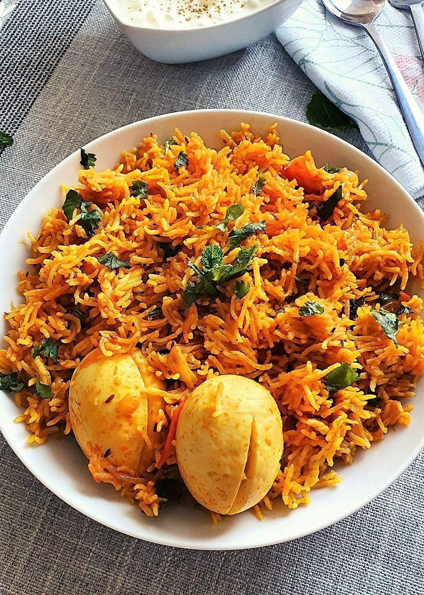

Egg Biryani

Descrition
Egg Biryani is a flavorful and aromatic rice dish made with basmati rice, boiled eggs, and a blend of spices. It's a delicious and easy-to-make dish that can be enjoyed as a main course. The eggs are cooked in a rich and spicy gravy, and then layered with rice to create a mouthwatering biryani that’s perfect for any occasion.
Ingredients
- 2 cups Basmati rice
- 4-6 Eggs, boiled and peeled
- 1 large Onion, thinly sliced
- 2 Tomatoes, chopped
- 1/2 cup Yogurt
- 2 tbsp Biryani Masala
- 1 tsp Turmeric powder
- 1 tsp Red chili powder
- 1 tbsp Ginger-Garlic paste
- 1/4 cup Ghee (clarified butter) or oil
- Fresh Coriander and Mint leaves, chopped
- Salt to taste
- Whole spices (Cinnamon, Cardamom, Cloves, Bay leaf)
- 2.5 cups Water
Instructions
- Wash and soak the Basmati rice in water for 30 minutes, then drain.
- Heat ghee in a large pot and add whole spices. Sauté until fragrant.
- Add the sliced onions and sauté until golden brown.
- Stir in the ginger-garlic paste, followed by the chopped tomatoes. Cook until tomatoes are soft.
- Add the yogurt, biryani masala, turmeric, red chili powder, and salt. Cook the mixture for 10 minutes on low heat.
- Add the boiled eggs to the mixture and gently coat them with the spices. Cook for a few minutes.
- Add the drained rice and water to the pot. Mix gently.
- Bring the mixture to a boil, then reduce heat to low. Cover and cook for 20 minutes, or until rice is done.
- Garnish with fresh coriander and mint leaves. Serve hot with raita or salad.